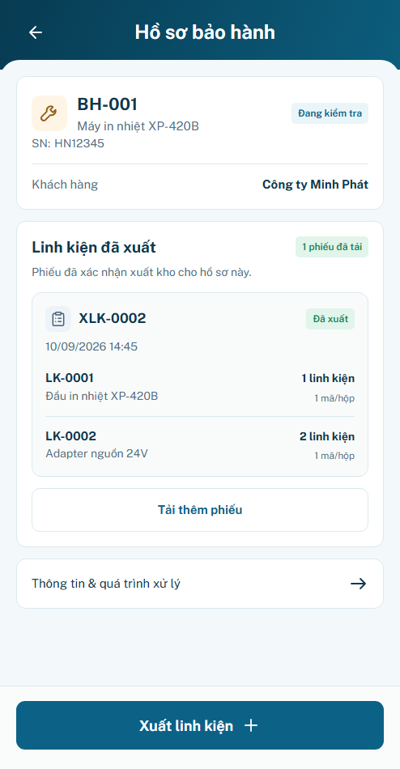
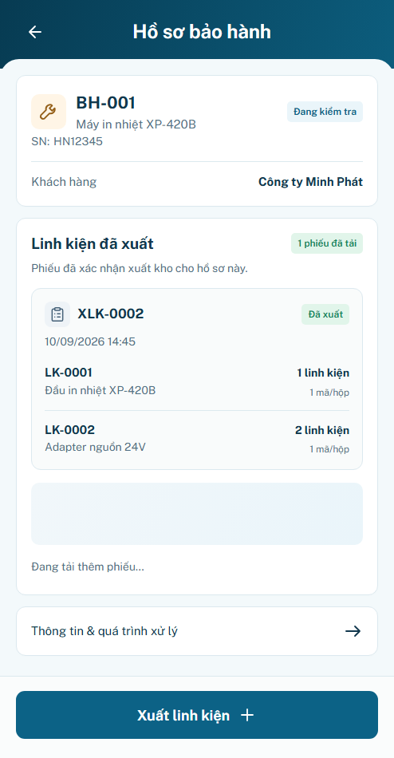
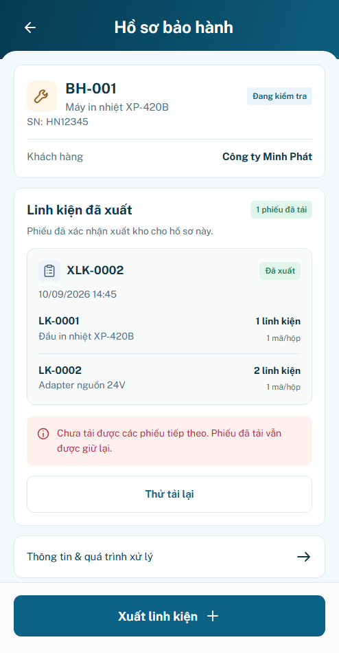
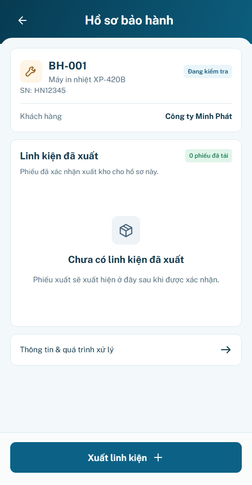
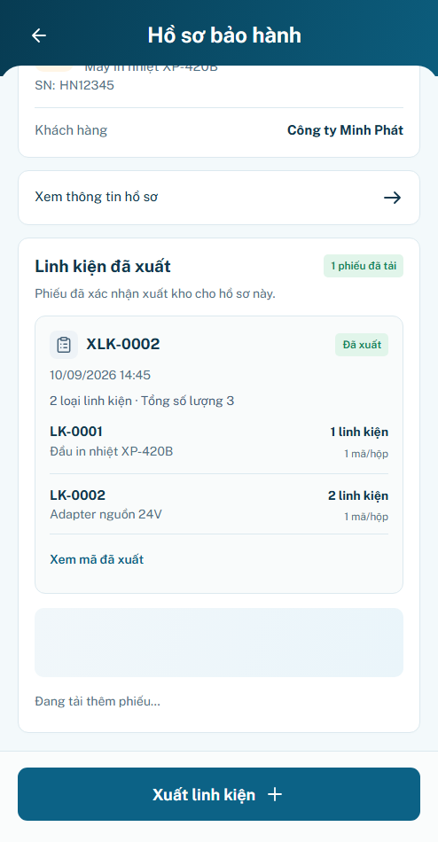
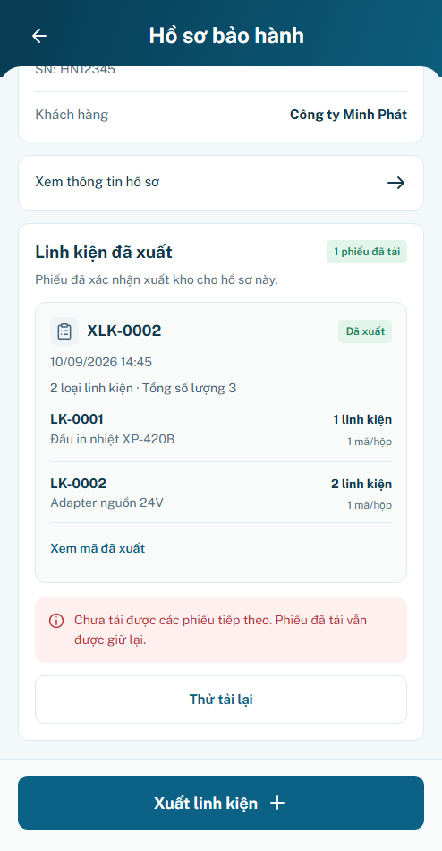

P20 r02 · Sáu cải tiến UI/UX
Áp dụng yêu cầu user: thông tin hồ sơ gần đầu trang; tóm tắt/thu gọn phiếu; xem mã gốc; nổi bật phiếu vừa xuất; context phiếu dở; đánh dấu phần mới tải. Giữ P20.S01–S04 và frame494×950. Hình thức chờ review; behavior PASS prototype; backend/hardware chưa xác minh.
Mở ứng dụng · minhanh / preview · Bảo hành → hồ sơ → Linh kiện → Xem lịch sử phiếu linh kiện. Bộ mô phỏng P20 ngoài khung app có4panel và phiếu nhiều dòng riêng.
Báo cáo r02 · Nguồn quyết định · Review r01 giữ nguyên.
Ảnh trước–sau cùng viewport494×950, DPR1, font local Public Sans, timezone Asia/Ho_Chi_Minh, zoom100%, reduced motion. Ảnh dưới thu nhỏ đồng nhất. Không đổi baseline B20, không tuyên bố pixel-perfect cho các nhánh mới được user yêu cầu.
P20.S01 · Phiếu đã xuất
Trước · r01
Sau · r02
P20.S02 · Tải thêm
Trước · r01
Sau · r02
P20.S03 · Lỗi tải thêm
Trước · r01
Sau · r02
P20.S04 · Rỗng đã xác minh
Trước · r01
Sau · r02
Loading/lỗi khi cuộn tới cuối danh sách
Các controls mới làm nội dung dài hơn. Đây là ảnh cuộn tới cuối để thấy đầy đủ loading và nút thử lại; không dùng ảnh này thay ảnh cùng vị trí ở trên.
P20.S02 · cuộn cuối
P20.S03 · cuộn cuối
Các tương tác mới
Fixture mã dài chỉ nằm trong test browser; không sửa dữ liệu nguồn hoặc ghi WMS.
Giới hạn và chứng cứ
111test logic;20nhóm browser P20;9nhóm P19 và11nhóm P09;20layout panel +15layout tương tác/5viewport; footer Home/P03 giữ khóa tại4viewport. Không có nguồn backend thì không báo integration PASS. Phiếu và trạng thái mở rộng chỉ nhớ trong phiên trang, reload mất dữ liệu.
UX tests · P20 regression · Logic tests.